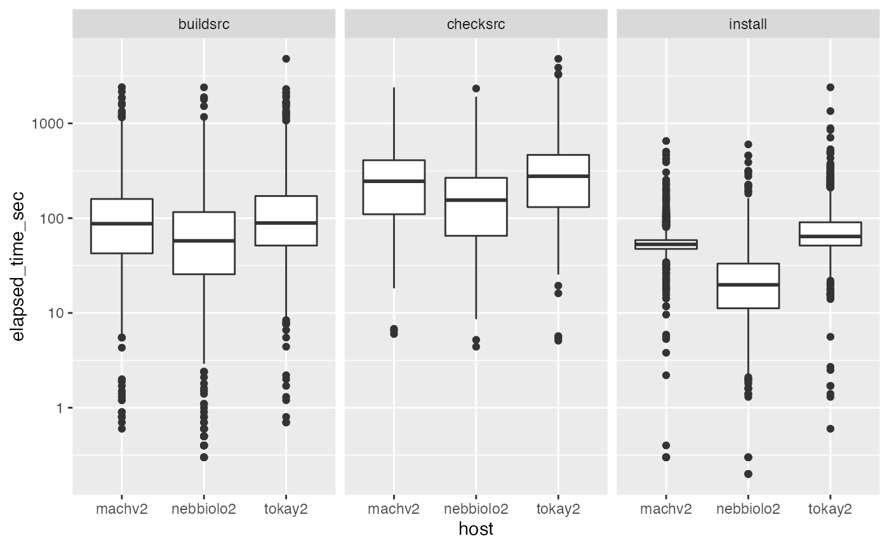
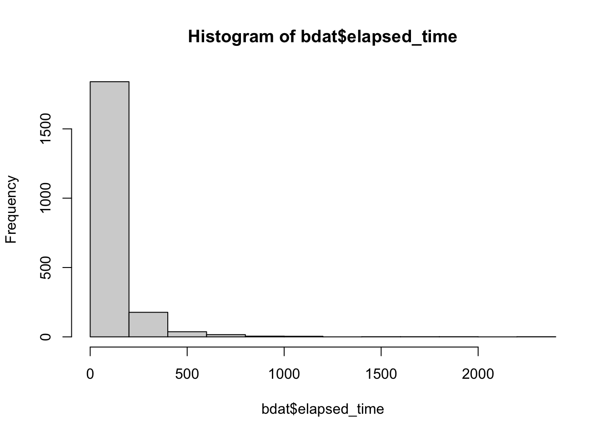

vignettes/bbsBuildArtifacts.Rmd
bbsBuildArtifacts.RmdWe’d like to be able to get a quick overview of status for a subset of Bioconductor packages. “Status” is relative to Bioconductor version, package version, build platform, and condition of the platform.
We want to be able to work with the current artifacts provided at, e.g., https://bioconductor.org/checkResults/3.15/bioc-LATEST/report.tgz. Such gzipped tar resources are prepared for different types of resource.
suppressPackageStartupMessages({
library(bbsBuildArtifacts)
library(dplyr)
library(DT)
library(ggplot2)
})
bbsBuildArtifacts:::valid_types()## [1] "bioc" "data-experiment" "workflows" "books"
## [5] "bioc-longtests"We’ll focus on type bioc for now, which associates with Software packages. We don’t know if all types are handled in the same way, but we hope so.
Our objective is to learn the status and processing times for various phases of the build process for all packages.
We define an S4 class to manage key information about builds. We’ve produced a thinned version of the BBS report.tgz accessible in the package at demo_url(). If url is not supplied to setup_artifacts(), the report.tgz will be retrieved from bioconductor.org.
af = setup_artifacts(type="bioc", version="3.14", url=demo_url(),
destbase="test_report")## starting untar...## done.
af## bbsBuildArtifacts ArtifSet instance.
## 15 pkg paths for type bioc, version 3.14.
## 5 extra file paths.
## use paths(aset)[...] to see selected paths.
d = as.data.frame(af)
dim(d)## [1] 180 6
head(d)## host pkgname pkgversion status elapsed_time phase
## 1 nebbiolo2 a4 1.42.0 OK 18.1 install
## 2 nebbiolo2 a4 1.42.0 OK 110.3 buildsrc
## 3 nebbiolo2 a4 1.42.0 OK 66.2 checksrc
## 4 nebbiolo2 a4 1.42.0 NA NA buildbin
## 5 nebbiolo2 affy 1.72.0 OK 16.5 install
## 6 nebbiolo2 affy 1.72.0 OK 55.4 buildsrc## machv2 nebbiolo2 tokay2
## 2.585000 1.508750 3.669028## buildbin buildsrc checksrc install
## 0.5458889 1.4805833 4.4115556 1.3247500
ggplot(mutate(d, elapsed_time_sec=elapsed_time), aes(y=elapsed_time_sec, x=host)) +
geom_boxplot() + facet_grid(.~phase) + scale_y_log10() ## Warning: Removed 35 rows containing non-finite values (stat_boxplot).
We want to extract details on errors.
package_by_host_data(af@pkg_paths["affyPara"], host="tokay2")## pkg_by_host_data instance for affyPara on host tokay2
## last commit: 2021-10-26 16:52:06, n_err=NA, n_warn=NA
## [NA for n_err implies R CMD check could not be run...]Because the full check logs are available, we can use rcmdcheck check_details/parse_check to get more details on events.
our_cache = BiocFileCache::BiocFileCache()
cid = get_report_tgz_cacheid(version = "3.14", type="bioc", cache=our_cache)
cid## [1] "BFC98"
our_cache[cid] # metadata## class: BiocFileCacheReadOnly
## bfccache: /Users/vincentcarey/Library/Caches/org.R-project.R/R/BiocFileCache
## bfccount: 1
## For more information see: bfcinfo() or bfcquery()
our_cache[[cid]] # actual path## BFC98
## "/Users/vincentcarey/Library/Caches/org.R-project.R/R/BiocFileCache/813523b2b272_file81352ffd6023"There is an unexported helper function to clean the cache of a path for a given version/type combination.
We do not cache the untarred data. The untar process must occur each time we want to analyze the artifacts.
allpaths = artifact_folder_paths(version = "3.14", type="bioc", cache=BiocFileCache::BiocFileCache())## starting untar...## done
allpaths## artifact_folders_paths instance:
## There are 2083 folders.
## Subset via [pkgname] to get full path.The package_by_host_data function will parse the DCF files created for each package by the BBS.
allpaths["parody"] # simple retrieval## parody
## "/var/folders/n4/p9th81md60s8nv12yv40sv8m0000gp/T//Rtmph5H2Vx/report/parody"
package_by_host_data(allpaths["parody"])## pkg_by_host_data instance for parody on host nebbiolo2
## last commit: 2021-10-26 16:53:06, n_err=0, n_warn=0We can produce a data table for a number of packages as follows.
few = allpaths[1:10]
dcfs = lapply(few, function(x) simplify_artifact_build_dcfs(package_by_host_data(x)$dcfs))## Warning in getsec(ac(z[, "EllapsedTime"])): NAs introduced by coercion
## Warning in getsec(ac(z[, "EllapsedTime"])): NAs introduced by coercion
## Warning in getsec(ac(z[, "EllapsedTime"])): NAs introduced by coercion
## Warning in getsec(ac(z[, "EllapsedTime"])): NAs introduced by coercion
## Warning in getsec(ac(z[, "EllapsedTime"])): NAs introduced by coercion
## Warning in getsec(ac(z[, "EllapsedTime"])): NAs introduced by coercion
## Warning in getsec(ac(z[, "EllapsedTime"])): NAs introduced by coercion
## Warning in getsec(ac(z[, "EllapsedTime"])): NAs introduced by coercion
## Warning in getsec(ac(z[, "EllapsedTime"])): NAs introduced by coercion
## Warning in getsec(ac(z[, "EllapsedTime"])): NAs introduced by coercionBuilding a comprehensive table requires some fault tolerance. We have used silent try calls in package_by_host_data; silent can be set to FALSE if desired.
suppressWarnings({
alldcfs = lapply(allpaths, function(x) simplify_artifact_build_dcfs(package_by_host_data(x)$dcfs))
})
fulltab = do.call(rbind, unname(alldcfs))Let’s get a sense of the distribution of build times.
## [1] 2083
hist(bdat$elapsed_time)
sum(bdat$elapsed_time > 600)## [1] 29